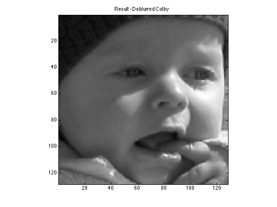
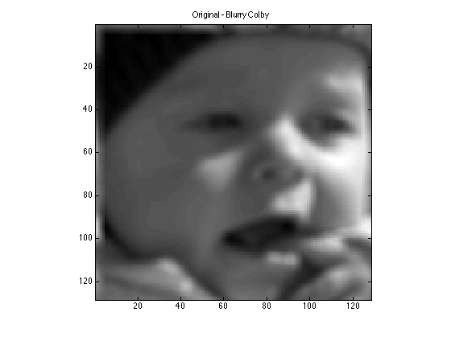

Image deblurring with a Pseudo-Inverse Filter
Ashutosh Priyadarshy
Spring 2012
Digital Image Processing
Homework 4
clear all; close all;
load ugly.mat
u = ugly;
U = fft2(u);
width = 5;
filterkernel = zeros(128, 128);
filterkernel(1:width, 1:width) = 1;
G = fft2(filterkernel);
G_zero = G == 0;
Ginv = 1./G;
Gpinv = Ginv .* ~G_zero;
RES = Gpinv .* U;
res = ifft2(RES);
figure;
imagesc(real(res)); axis square;
title('Result - Deblurred Colby');
colormap gray
figure;
imagesc(real(u)); axis square;
title('Original - Blurry Colby');
colormap gray
 